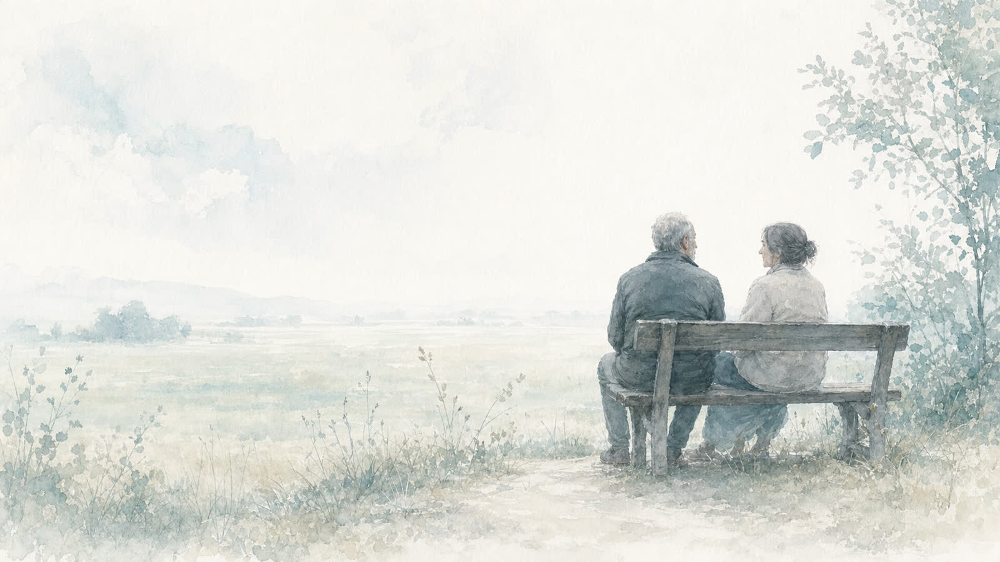
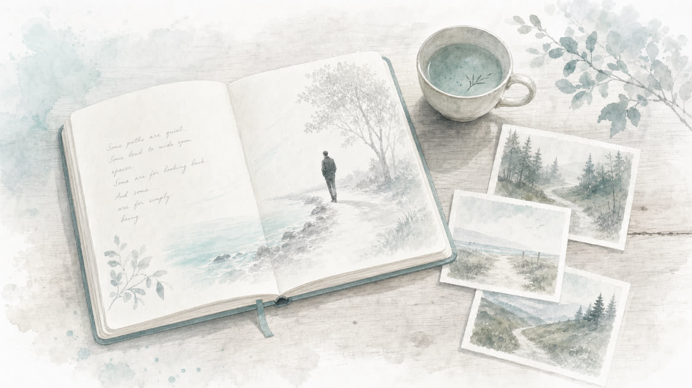
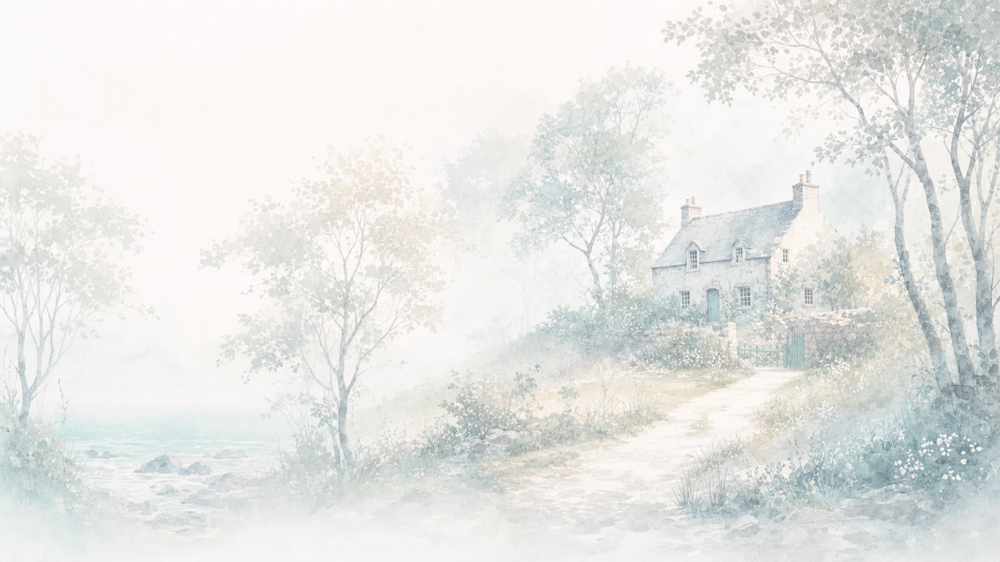
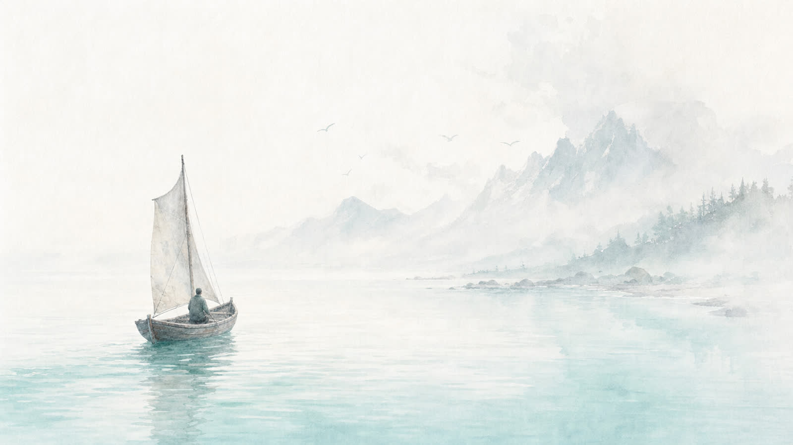
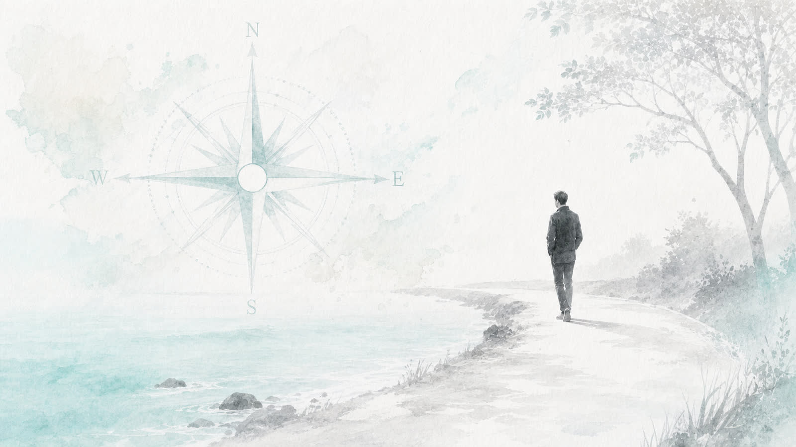

Many people struggle to name what they want because they put too much pressure on the first answer.
THREE FUTURES
They think there must be one perfect dream, one correct path, one grand answer arriving with soft lighting and a soundtrack.
That pressure shuts down imagination.
This guide helps you sketch several possible futures before you choose one.
The aim is not to decide immediately. The aim is to loosen the grip of "I must get this right" and create options that feel alive, meaningful and worth a closer look.
A Big Dream often becomes clearer when you compare it with other possible futures.
Your answers are saved on your device as you go. You can leave and come back.
Let's begin...

Optional Example Characters
Pieter and Marietjie are fictional example participants. Their examples are included only to help you if you feel stuck. You do not need to copy their style or answers. Use them only as a guide, then return to your own life and write what is true for you.
Pieter van der Merwe
Pieter is 46. He runs a small business. He is responsible, capable and tired. He has built a life that works on paper, but he feels like he is slowly becoming emotionally absent, reactive and stuck in survival mode.
Marietjie Botha
Marietjie is 39. She is a teacher and mother of two. She loves her family, but she feels she has disappeared into everyone else's needs. She wants a future with more honesty, energy, creative expression and personal direction.
From Guide 1
Pieter discovered his Big Dread: becoming a tired provider who loses his health, presence and joy while maintaining a life that looks successful from the outside.
Marietjie discovered her Big Dread: becoming a useful, dependable person who slowly loses her own voice, creativity and sense of aliveness.

The Method Behind This Guide
This guide uses three practical methods:
Life Design and Odyssey Planning
You sketch several possible futures instead of trying to force one perfect answer.
Best Possible Self writing
You imagine future versions of your life in concrete detail.
Values clarification
You look for the values and longings that repeat across the futures.
Do not judge the futures too early. First sketch. Then compare. Then notice which future has energy.
Step 1 · Future 1
My Current Path Improved
You stay on your current path. You do not change everything. You change what needs a change or upgrade. This is the life you already have, but healthier, clearer, more aligned and less reactive. You keep what is working. You stop tolerating what is costing you. This is not a different life. It is the same life with the leaks fixed.

Show examples
Pieter's example
Name: A Healthier Business, A Present Father
Normal week: I still own the business, but I am not involved in every small decision. My team carries more, my calendar has space for health and family, and I am rarely in survival mode.
What I stop tolerating: constant availability, rescuing every problem, scattered attention.
What this makes possible: leadership, health, presence with my family, mentoring others.
Marietjie's example
Name: Steady Teacher with Honest Boundaries
Normal week: I still teach, but I do not take so much work home. One evening a week is for my own learning. I am honest with my family about what I need.
What I stop tolerating: being last on my own list, saying yes when I mean no, resentment as my baseline.
What this makes possible: my own learning, creative work, depth in close relationships, real rest.
Step 2 · Future 2
My Courageous Path
This is the path you have been avoiding. It may not be wild or dramatic. It may simply be more truthful. The courageous path asks for honesty about what you actually want, even when it scares you. It may involve a hard conversation, a new direction, or a permission you have been refusing yourself.
Show examples
Pieter's example
Name: The Owner Who Leads, Not Rescues
Normal week: I appoint or train a manager and simplify the business. I become an owner and leader, not the one who rescues every situation. This scares me because I am used to being needed.
What I stop tolerating: over-functioning, being indispensable, rescuing every problem.
What this makes possible: real leadership, depth in close relationships, health, mentoring.
Marietjie's example
Name: A Teacher with Her Own Voice
Normal week: I start writing and teaching in my own voice, not only the school curriculum. I create workshops for parents or young women. I stop hiding behind "I am too busy."
What I stop tolerating: hiding, performing for approval, saying yes when I mean no.
What this makes possible: creative work that is mine, honest expression, work that grows me.
Step 3 · Future 3
My Unexpected Path
This is the path you do not usually let yourself consider. It may be creative, simple, adventurous, slower, bolder, more spiritual, more entrepreneurial, or completely different from what people expect from you. You do not need to commit to this path. Just let it be possible for ten minutes.

Show examples
Pieter's example
Name: The Mentor and the Long Family Trip
Normal week: I sell part of the business or change it so I can mentor younger entrepreneurs. I spend more time teaching, guiding and building people rather than constantly managing operations. I also take a few months to travel locally with my family before the children leave home.
What I stop tolerating: letting urgency decide my day, treating my body like a rented machine.
What this makes possible: mentoring or guiding others, real rest, adventure and play.
Marietjie's example
Name: A Small Studio, A Different Rhythm
Normal week: I take a sabbatical or reduce my teaching load and create a small studio space where I write, facilitate groups and run creative retreats. Slower mornings. Deeper conversations. Work connected to who I am becoming.
What I stop tolerating: financial avoidance, scattered attention, performing for approval.
What this makes possible: creative work that is mine, a sense of direction, work that grows me.
Step 4
Values I See Repeating
Values determine behaviour. Goals tell you what you want. Values tell you who you are becoming along the way. Look across the three futures. Do not ask which is most impressive. Ask which values keep showing up across the improved, the courageous and the unexpected.
There is no correct path. There is no right answer. Trust your first instinct, the one that arrives before logic catches up. This is a sketch, not a commitment.

Show examples
Pieter's example
Most energy: Future 2 (Courageous Path): becoming an owner and mentor.
Most peace: Future 1 (Current Path Improved): feels more achievable.
Meaningfully scary: Future 2: training others to lead and not needing to be involved in everything.
Most like approval-seeking: Future 1: continuing to grow the business just to look successful.
Most aligned with who I want to become: a combination of Future 1 and Future 2.
Marietjie's example
Most energy: Future 2 (Courageous Path): writing and facilitating.
Most peace: Future 1 (Current Path Improved): better boundaries.
Meaningfully scary: Future 3 (Unexpected Path): asking me to take my own voice seriously.
Most like approval-seeking: staying exactly where I am, being known only as dependable.
Most aligned with who I want to become: Future 2 (Courageous Path).
Step 6
Choose One Future to Develop
You are not choosing forever. You are choosing the future you want to look at more closely today. You may combine elements from the three futures, but choose one main direction.
Show examples
Pieter's example
The future I want to look at more closely is becoming a healthier business owner who leads through people and systems instead of constant personal rescue.
I am choosing this future because I do not want to lose my family, health and joy while building something that was supposed to give us a better life.
Marietjie's example
The future I want to look at more closely is becoming a woman who teaches, writes and facilitates from her own voice while still loving and caring for her family.
I am choosing this future because I do not want to disappear into usefulness. I want my life to include creativity, courage and honest expression.
Final Check
Read the future you chose. Then ask:
Does this future feel chosen, not forced?
Does it create energy or peace?
Does it ask me to grow?
Does it connect to values that matter to me?
Does it feel like a direction worth taking seriously?
If yes, take it into the next guide. If not, return to the three futures and choose the one with more life in it.
Three futures named. That takes courage.
Much love, Francois
Your reflection
Three Possible Futures
An insight document for you to keep.
Your reflection is saved on this device. No one else can see it.